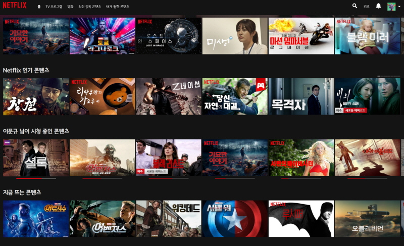
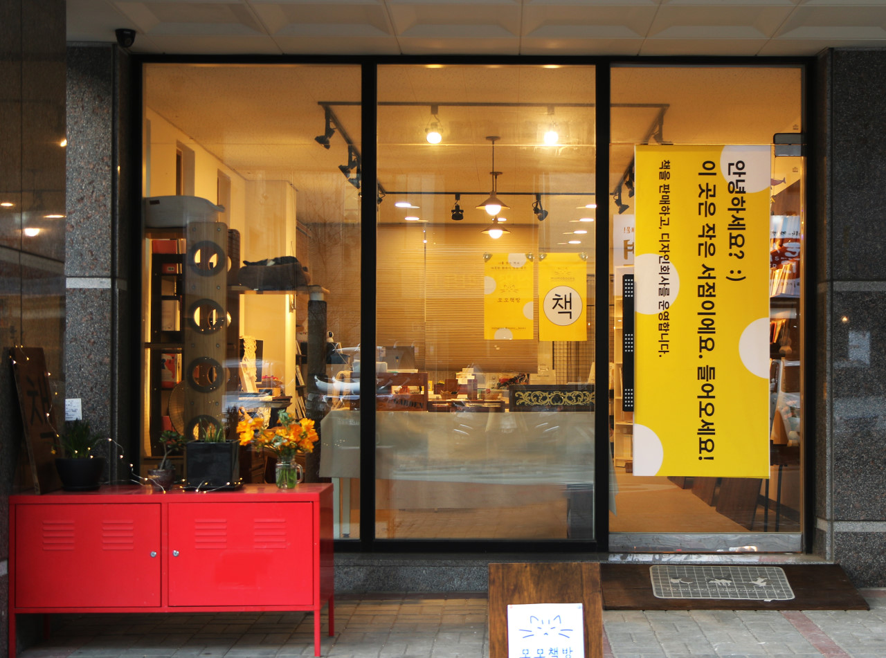

이 동아리 활동에 참여하게 된 것을 환영해. 우리의 목적은 웹 사이트로 자신만의 포트폴리오를 만드는 거야. 최근 많은 취업 지원자들이 자기소개서나 포트폴리오를 웹페이지로 만들고 있어. 종이로 된 것은 전달하기도 불편하고, 많은 것을 표현하기 힘들기 때문이야. 여러분도 이번에 기초적인 수준에서 웹 포트폴리오 제작 방법을 배워보고, 나중에 대학생이 되었을 때 더 멋지게 만들어서 취업에 성공했으면 좋겠어. 모두 파이팅!
선생님은 고등학교 때 애니메이션동아리 부장이었어. 일본만화부터 프랑스 만화까지 만화를 매우 좋아하는 학생이었지. 지금도 그래픽노벨이라고 불리는 고품격만화에서부터 편하게 즐길 수 있는 웹툰까지 모든 만화를 사랑해. 언젠가는 국어 수업의 주된 제시문으로 만화가 나오지 않을까? 그런 세상이 빨리 오면 좋겠다.
1년 전에 넷플릭스를 알게 되고, 쌤은 신대륙을 발견한 콜럼버스처럼 날뛰었지. 한 달에 몇 천원만 내면 전세계의 핵대박 재밌는 드라마를 볼 수 있는 세상이 왔다니, 놀라움을 금할 길이 없었어. 덕분에 1년간 살이 엄청 쪘지. 하지만 상관없어. 재밌으면 장땡이야 ㅋㅋ...
쌤은 기독교인이야. 사랑이 넘치고 정의로운 하나님의 나라가 이 땅에서 실현되길 간절히 소망하고 있지. 하지만 보수적인 기독교와는 지향하는 바가 조금 다른 진보적 신앙관을 가지고 있어. 비유하자면 지금까지 기독교는 배고픈 자에게 물고기를 주거나, 물고기 잡는 법을 가르쳐 줬지. 하지만 선생님이 생각하는 앞으로의 기독교는 왜 그 사람의 강에 물고기의 씨가 말랐는지, 모두가 아는 물고기 잡는 법을 왜 그 사람만 모르는지 같이 고민하는거야. 특히 이 땅의 모든 소수자를 기독교가 포용하고 인정하면 좋겠어.
이 세상에는 수많은 운동이 있지만 선생님이 제일 좋아하는 건 수영이야. 그 중에서도 스노클링을 정말 좋아하지. 파란 바다 속에서 맞이하는 물고기들의 반짝임보다 빛나는 것이 있을까? 물 속은 정말 아름다워.
샘의 지인이 운영하고 있는 독립서점이야. 주말에 나는 책방지기로 자원봉사를 하고 있지. 안 유명한 책이나 개인이 출판사 없이 쓴 책을 주로 판매하는 곳인데, 요새 책방은 이처럼 개인의 이야기를 발굴하고 보관하는 공간으로 의미가 변해가는 것 같아.
